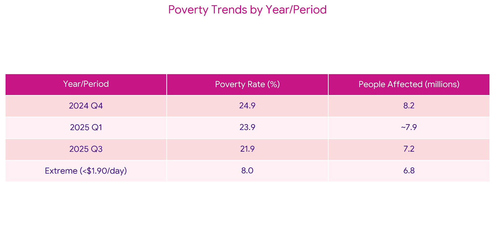
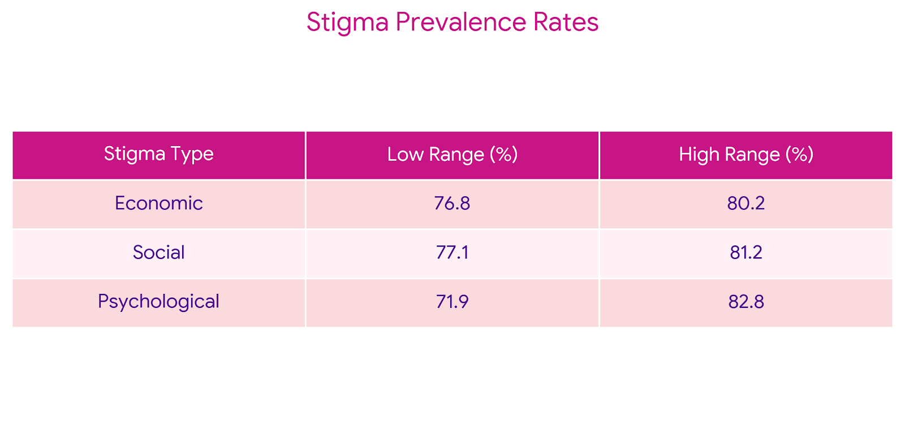

Attitudes within healthcare settings can also shape access to care in ways that go beyond the
physical shortage of beds. Even when hospitals are already stretched thin, the ways healthcare
workers perceive and respond to patients can influence whether someone receives timely attention or
is quietly deprioritized. For some people, especially those seeking care for mental health
struggles, substance use, or long term chronic conditions, encounters with the healthcare system can
involve judgment, dismissal, and sttitudes that their suffering is their own fault. In these
moments, the barrier to care is not only infrastructural but also social.
In the case of
Charles Amissah,
it is speculated that he could have been discriminated against because he was on a moterbike.
Motorcyclists have sterotypes around being rough and bad drivers, and are generally disliked by many
in Ghana.
After learning about this sterotype from my conversation with Officer Reginald, I asked a few of my
uber drivers in the following days about their opinions and they confirmed that these stigmas are
widely held.
Thinking about No Bed Syndrome through this lens shows that the crisis is not only about
the absence of beds, but also
about the attitudes and everyday interactions within hospitals that shape whose pain is recognized
and whose care is treated as less urgent.
Graph 1: Poverty Trends

Poverty rates and healthcare access trends over past 5 years showing
correlation between economic status and medical care availability.
Source: Ghana
Statistical Service
Graph 2: Healthcare Attitudes Survey

Healthcare worker attitudes across different conditions showing impact on
care-seeking behavior and treatment experiences.
Source: Cambridge
Study
Understanding Healthcare Worker Attitudes
These statistics also help illustrate how broader economic pressures shape the dynamics within the healthcare system that contribute to No Bed Syndrome in Ghana. With poverty rates remaining around 22 to 25 percent in recent years and millions of people living with limited financial stability, many people pursue professions like nursing primarily out of financial need rather than passion. As Officer Reginald explained to me in conversation, many workers do not always have the autonomy to pursue the work they are most interested in, but instead choose careers that provide stable income in a difficult economic environment. These realities can shape how people experience demanding healthcare roles that require patience and emotional labor. When these economic pressures exist alongside high levels of social and psychological stigma reflected in the survey data, they can influence everyday interactions in hospitals and shape how patients are treated within already overcrowded systems.